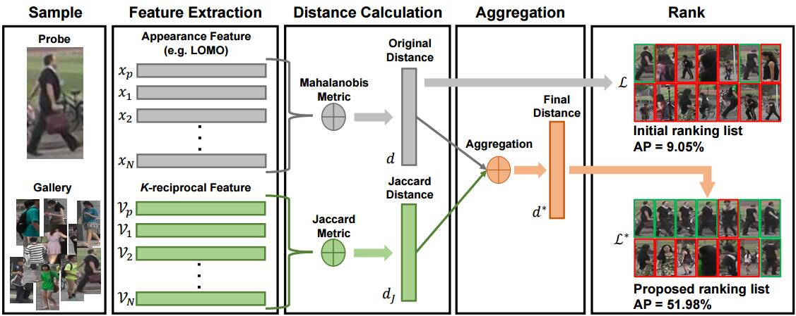
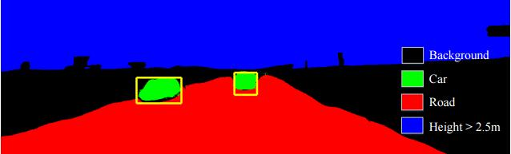

About me
Hello!
I am currently a Ph.D. student in Cognitive Science Department, at Xiamen University under the supervision of Prof. Shaozi Li . I received the M.S. Degree in Computer Science and Technology in 2015 from China University Of Petroleum, Qingdao, China. I received the B.S. degree from the Information Engineering Department, from East China University of Technology in 2012.
I am currently doing person re-identification research, under the co-supervision of Dr. Liang Zheng.
My research interests include person re-identification, object detection, and machine learning.
I am currently a Ph.D. student in Cognitive Science Department, at Xiamen University under the supervision of Prof. Shaozi Li . I received the M.S. Degree in Computer Science and Technology in 2015 from China University Of Petroleum, Qingdao, China. I received the B.S. degree from the Information Engineering Department, from East China University of Technology in 2012.
I am currently doing person re-identification research, under the co-supervision of Dr. Liang Zheng.
My research interests include person re-identification, object detection, and machine learning.
News
- [2017.03.04] One paper is accepted to CVPR 2017.

- [2016.02.26] One paper is accepted to Neurocomputing 2017.
- [2016.12.01] ID-discriminative Embedding baseline on Market-1501 is available. [code]
- [2016.09.01] One paper is accepted to Multimedia Tools and Applications 2016.
Publications

Re-ranking Person Re-identification with k-reciprocal Encoding
Zhun Zhong, Liang Zheng, Donglin Cao,Shaozi Li
To appear in CVPR, 2017
abstract / bibtex / axXiv/ code is available/
Zhun Zhong, Liang Zheng, Donglin Cao,Shaozi Li
To appear in CVPR, 2017
abstract / bibtex / axXiv/ code is available/
@article{zhong2017re,
title={Re-ranking Person Re-identification with k-reciprocal Encoding},
author={Zhong, Zhun and Zheng, Liang and Cao, Donglin and Li, Shaozi},
journal={arXiv preprint arXiv:1701.08398},
year={2017}
}
When considering person re-identification (re-ID) as a retrieval process, re-ranking is a critical step to improve its accuracy. Yet in the re-ID community, limited effort has been devoted to re-ranking, especially those fully automatic, unsupervised solutions. In this paper, we propose a k-reciprocal encoding method to re-rank the re-ID results. Our hypothesis is that if a gallery image is similar to the probe in the k-reciprocal nearest neighbors, it is more likely to be a true match. Specifically, given an image, a k-reciprocal feature is calculated by encoding its k-reciprocal nearest neighbors into a single vector, which is used for re-ranking under the Jaccard distance. The final distance is computed as the combination of the original distance and the Jaccard distance. Our re-ranking method does not require any human interaction or any labeled data, so it is applicable to large-scale datasets. Experiments on the large-scale Market-1501, CUHK03, MARS, and PRW datasets confirm the effectiveness of our method.

Class-Specific Object Proposals Re-ranking for Object Detection in Automatic Driving
Zhun Zhong, Mingyi Lei, Donglin Cao, Jianping Fan, Shaozi Li
Neurocomputing, 2017
abstract / bibtex / PDF
Zhun Zhong, Mingyi Lei, Donglin Cao, Jianping Fan, Shaozi Li
Neurocomputing, 2017
abstract / bibtex / PDF
@article{zhong2017class,
title={Class-Specific Object Proposals Re-ranking for Object Detection in Automatic Driving},
author={Zhong, Zhun and Lei, Mingyi and Cao, Donglin and Fan, Jianping and Li, Shaozi},
journal={Neurocomputing},
year={2017},
publisher={Elsevier}
}
Object detection often suffers from a plenty of bootless proposals, selecting high quality proposals
remains a great challenge. In this paper, we propose a semantic, class-specific approach to re-rank
object proposals, which can consistently improve the recall performance even with less proposals.
We first extract features for each proposal including semantic segmentation, stereo information,
contextual information, CNN-based objectness and low-level cue, and then score them using classspecific
weights learnt by Structured SVM. The advantages of the proposed model are two-fold: 1)
it can be easily merged to existing generators with few computational costs, and 2) it can achieve
high recall rate uner strict critical even using less proposals. Experimental evaluation on the KITTI
benchmark demonstrates that our approach significantly improves existing popular generators on
recall performance. Moreover, in the experiment conducted for object detection, even with 1,500
proposals, our approach can still have higher average precision (AP) than baselines with 5,000
proposals.